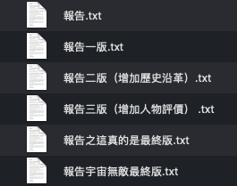

Minimal Git demo
2019-02-23
Chapter 1 前言
為什麼我們需要Git
小瑜是一位社會人文科學相關主修的學生，學習上常常會需要寫報告，動則數千字到上萬字，以下是他管理檔案的方式，他承認有時候快被自己氣死…..你是不是有時也這樣XD
後來，因緣際會地留意到git這個東西，一套能夠讓開發者得以進行版本控制的程式。
往後小瑜是事半功倍從此樂逍遙，檔案內容追蹤管理都方便許多，看完這本電子書後你也可以！當然80%的時候啦XD，畢竟這本書著重理解觀念，不觸及進階功能與指令，原則上能應付80%的情境所需＝）
第一部分
編寫方式說明
與其他教材稍有不同的是，這本書規劃先從輕鬆的Github平台環境介紹開始，版本控制的學習則用圖形化介面（GUI）的Github Desktop的操作來建立觀念， 也藉此暫緩一下要直接面對黑壓壓終端機敲打指令的壓迫感…..
進入到後半段才正式要認識如何用指令(Command Line)來與電腦溝通，同時瞧瞧Git指令的結果與Github Desktop點來點去的結果有沒有一樣？
預計分為幾個部分：
- 什麼是Github?
- 什麼是Github Desktop?
- CommandLineInterface(CLI)
- Git指令與Github Desktop的對應比較。